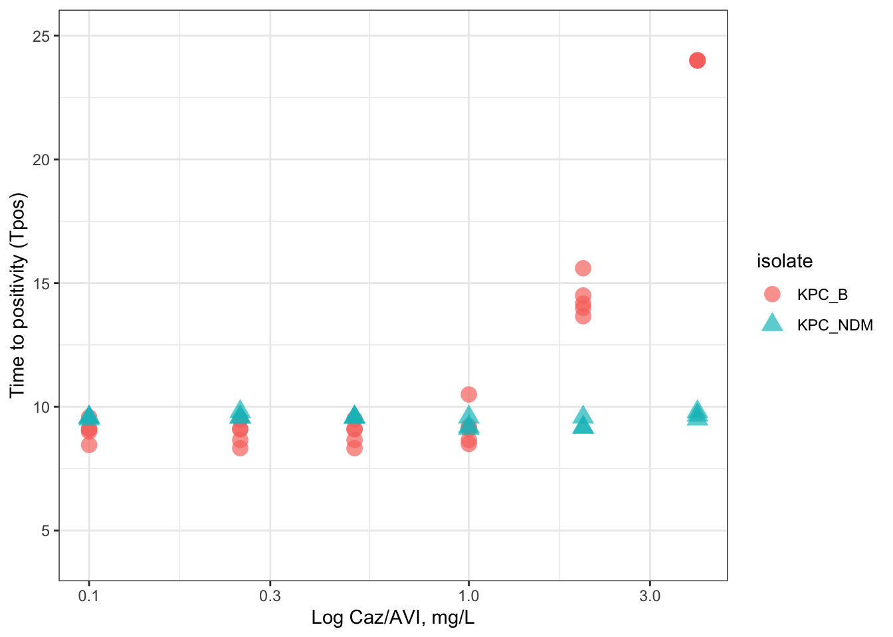
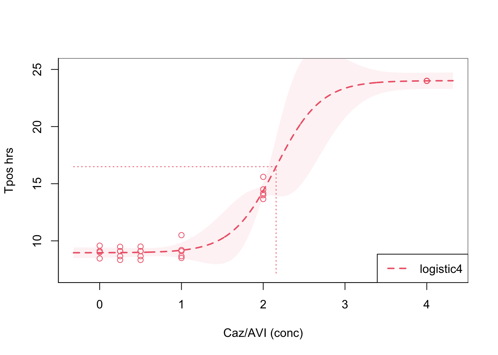

Workpackage 1
Workpackage 1A
Establishing the quantitative relationship of TPOS and KPC-Klebsiella pneumoniae inoculum in blood culture bottles. A modification of the methods proposed by Kaltsas et al.1. Detailed methods can be found following this link
Briefly, tubes containing 1.8 mL of pooled healthy human serum were inoculated with 0.2 mL of a series of seven ten-fold dilutions (5x101 to 5x107 CFU/mL) of the standardised inoculum of each test indicator strains listed in Table 1. The inoculated sera are then transferred into BacT⁄ALERT bottles without inactivating matrix (Biomérieux Inc) for aerobic incubation and monitored for time to positivity. Tpos results will be used to establish preliminary assay quality control ranges and confirm the utility of isolates as selected “indicator” organisms and quality control ranges at specific inoculum thresholds. Experiments will be performed in at least 10 replicates. The main goal of this workpackage is to demonstrate that Tpos results under the assay conditions exhibit a reproducible and reliable relationship with bacterial inoculum for representative KPC-carbapenemase producing strains of K. pneumoniae.
Experiments were repeated in triplicate for five KPC-carbapenemase producing K. pneumoniae strains (KPC_KPCA,B,C and NDM, and VIM producing strains) and a reference K. pneumoniae ATCC strain producing ESBL only. Detailed information on the isolates can be found here. We also compared how inoculation of the organism suspension prepared in phosphate buffered saline (pbs-0.9%) versus pooled human serum (serum) affected Tpos.
Figure 1. shows the relationship between Tpos and the K. pneumoniae inoculum fitted by Loess. A linear relationship was evident from approximately 101-108 K. pneumoniae CFU/mL and a Tpos measured in the BACTEC-Alert culture system from 10.5 hours-4.5 hours over the tested inoculum range. These data suggest Tpos has a high dynamic range as a possible biomarker.
Note: we need to add a special note about the actual inoculum in the bottle
Figure 1
Figure 2.

Figure 3. Relationship of ceftazidime-avibactam concentrations vs. time to positivity for KP_KPC_B

Call: drda(formula = tpos ~ conc, data = wp2, mean_function = "logistic4",
max_iter = 1000)
Pearson Residuals:
Min 1Q Median 3Q Max
-1.40020 -0.63581 0.00006 0.24329 2.54945
Parameters:
Estimate Std. Error Lower .95 Upper .95
Minimum 8.9594 0.15665 8.652 9.266
Height 15.0587 0.30239 14.466 15.651
Growth rate 3.6462 1.36438 0.972 6.320
Midpoint at 2.1573 0.05969 2.040 2.274
Residual std err. 0.5187 0.07487 0.372 0.665
Residual standard error on 26 degrees of freedom
Log-likelihood: -20.729
AIC: 51.457
BIC: 58.463
Optimization algorithm converged in 336 iterationsReferences
1.
Kaltsas, P., Want, S. & Cohen, J. Development of a time-to-positivity assay as a tool in the antibiotic management of septic patients. Clinical microbiology and infection: the official publication of the European Society of Clinical Microbiology and Infectious Diseases 11, 109–114 (2005).